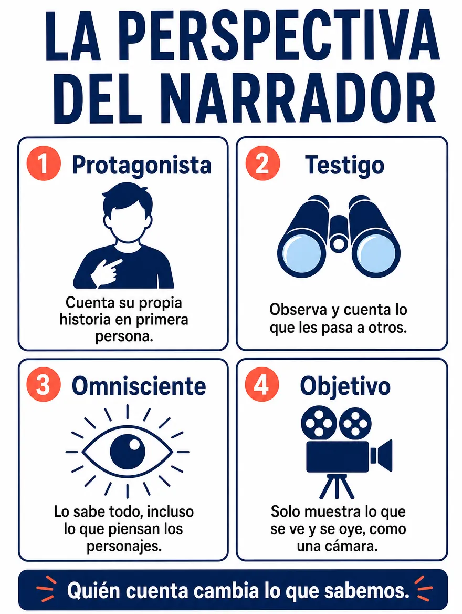

Competencia Lectora · 3.º HC
Repaso 2 · Leer literatura
Diez contenidos para leer cuentos, poemas y obras dramáticas
19 de noviembre de 2026 · 10 contenidos · 44 preguntas
Antes de practicar · Clase con el docente
Aprende la estrategia
Leer literatura: narrativa, lírica y drama
Objetivo de la clase
Repasar diez contenidos para leer literatura (narrador y perspectiva, personajes y conflictos, tiempo de la narración y anacronías, datos e indicios, hablante lírico, lenguaje poético y símbolos, verso, estrofa y rima, tópicos literarios, género dramático, y contexto de producción e intertextualidad) y aplicarlos en cuentos, poemas y una escena teatral.
¿Cómo comprobaré mi avance? Podré decir qué contenido literario usé en cada respuesta y mostrar la parte de la lectura que la apoya.
Instrucciones de trabajo · Antes de comenzar
Necesitas esta guía y tu cuaderno. Abre los cuatro bloques de esta pantalla en orden. Trabaja el ejemplo con el docente; después intenta la comprobación antes de desplegar su respuesta.
Luego ingresa con tu RUT. La guía tiene diez partes: en cada una primero repasas el contenido con su infografía y después lo aplicas en una lectura con cuatro o cinco preguntas. Tiempo sugerido: 90 minutos. En las preguntas 2, 8, 10, 16, 19, 23, 29, 33, 37 y 43 escribe también una respuesta breve.
Las consignas de este repaso inicial se responden en tu cuaderno: no tienen puntaje ni se guardan en línea. Las respuestas de la guía se guardan solas. Al entregar, espera la confirmación de la plataforma; los resultados dependen de la publicación del docente.
Activa lo que sabes
Piensa en un cuento, un poema o una obra de teatro que hayas leído en clases. Si alguien te preguntara «¿quién lo cuenta?» y «¿qué quiso decir el autor con eso?», ¿qué responderías? Esas dos preguntas son el punto de partida de hoy.
- 1 · Comprende
- 2 · Aplica
- 3 · Observa
- 4 · Comprueba
1. Comprende los conceptos
Quién cuenta y desde dónde

El narrador puede ser protagonista, testigo, omnisciente u objetivo. Cada uno sabe y muestra cosas distintas. En la literatura contemporánea también hay monólogo interior, flujo de conciencia, narrador múltiple y narrador no confiable.
Personajes y conflictos
Un personaje se caracteriza de forma física, psicológica y social, y esa caracterización puede ser directa (el narrador lo dice) o indirecta (se deduce de lo que hace y dice). El conflicto puede ser interno, con otro personaje, con la sociedad o con la naturaleza o el destino.
Tiempo y anacronías
El tiempo de la historia es el orden en que ocurren los hechos; el tiempo del relato es el orden en que se cuentan. Cuando difieren, hay anacronías: analepsis (salto al pasado), prolepsis (salto al futuro) o inicio in medias res (en mitad de la acción).
Datos e indicios, y estructura del cuento
Los datos son información explícita; los indicios son pistas sutiles que sugieren algo. El cuento tiene inicio, quiebre, desarrollo y desenlace.
Hablante lírico y lenguaje poético
El hablante lírico puede ser enunciativo (describe desde fuera), apostrófico (se dirige a un tú) o carmínico (expresa su interior). Los recursos poéticos, como la metáfora, la comparación, la personificación, la anáfora o la aliteración, dicen más con menos. Un símbolo es una imagen concreta que representa una idea abstracta, y su sentido depende del poema.
Verso, estrofa, rima y soneto
El verso es una línea; la estrofa, un grupo de versos. La rima es consonante si coinciden vocales y consonantes, y asonante si coinciden solo las vocales. El soneto tiene 14 versos endecasílabos (dos cuartetos y dos tercetos).
Tópicos literarios
Son temas que se repiten en la historia de la literatura: carpe diem, tempus fugit, memento mori, vanitas, la vida es sueño y locus amoenus.
Género dramático
Es un texto escrito para ser representado. Tiene conflicto, personajes, diálogo y acotaciones. Sus formas del discurso son el diálogo, el monólogo, el soliloquio y el aparte.
Contexto e intertextualidad
El contexto de producción es la época y las circunstancias en que se escribió la obra; el de recepción, la época y las experiencias desde donde la leemos hoy. La intertextualidad es la relación entre textos: cita, alusión o parodia.
2. Aplica la estrategia paso a paso
- Repasa el contenido
Mira la infografía de la parte y lee «Lo esencial». Di con tus palabras qué significa cada concepto.
- Lee la obra completa
Antes de mirar las preguntas, pregúntate quién habla, qué ocurre y qué siente quien habla o actúa.
- Reconoce qué pide la pregunta
¿Pregunta por quién cuenta, por cómo es un personaje, por el orden del tiempo, por una pista, por un recurso del poema, por la rima, por un tópico, por una forma del drama o por la relación con otra obra?
- Vuelve al texto y decide
Ubica el verso, la frase o la acotación que responde y compara las alternativas con ella. Descarta las que mezclan conceptos vecinos o afirman algo que la obra no muestra.
Antes del modelo: explica con tus palabras la diferencia entre un narrador protagonista y uno testigo.
3. Sigue un ejemplo razonado
Ejemplo de enseñanza, no evaluado
«Mi hermana jura que no le importa el resultado. Por eso, antes del desayuno, ya había refrescado la página ocho veces. Yo no digo nada; solo le sirvo el té y miro cómo se le mueven los dedos sobre la mesa».
Pregunta del modelo
¿Qué tipo de narrador tiene el fragmento y cómo sabemos que su hermana está nerviosa?
Pienso en voz alta
El narrador habla en primera persona, pero la historia es la de su hermana: él solo observa lo que ella hace. Por eso es un narrador testigo. Su hermana dice una cosa, pero «ya había refrescado la página ocho veces»: sus actos dicen otra.
Conclusión justificada
Narrador testigo: cuenta lo que le pasa a otra persona. El nerviosismo no se declara, se deduce de dos indicios: «refrescado la página ocho veces» y «se le mueven los dedos». Descarto «protagonista», porque el narrador no cuenta lo que él siente, sino lo que ve.
4. Comprueba y prepara la práctica
Ahora explica tú · En tu cuaderno
En el mismo fragmento, ¿qué sabe el narrador sobre su hermana y qué no puede saber? Anota una cosa de cada tipo y por qué.
Revisa después de responder
Sabe lo que ve y oye: que ella «jura que no le importa el resultado» y que mueve los dedos sobre la mesa. No puede saber con certeza lo que ella piensa o siente por dentro, porque no es un narrador omnisciente. Si anotaste lo que ella piensa como un hecho, revisa: el texto solo muestra lo que se ve.
Comprueba antes de avanzar
¿Puedes decir quién cuenta y desde dónde? ¿Puedes señalar la frase que te mostró lo que el personaje no dice? Si falta alguno, vuelve al bloque 1 de esta pantalla.
Aplica y transfiere
En la práctica, antes de responder cada pregunta, di qué contenido pide: narrador, personaje o conflicto, tiempo, indicio, hablante lírico, recurso o símbolo, verso o rima, tópico, forma del drama o intertexto. Lo usarás en el cierre de la guía.
Guía 28 · 12 de noviembre
Repaso 2 · Leer literatura
10 contenidos · 44 preguntas · Tiempo sugerido: 90 minutos · En cada parte, primero repasa la infografía y después aplica el contenido en la lectura
Revisión y entrega
Puedes entregar con preguntas pendientes.
Entrega confirmada
Tus respuestas quedaron registradas. Los resultados estarán disponibles cuando el profesor los publique.
Volver al portal PAES